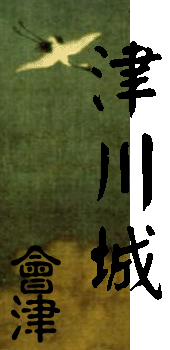
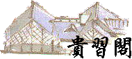

|  | ||||
| 《诗经.小雅.斯干》 “如��斯翼，如矢斯棘，如鸟斯革，如��斯飞。” 曰：“广厦虽佳，有容为上。” |
三浦梅园《赘语.善恶帙》 “性者自然也，习则成自然，故古人之不言于性而言于习。” 曰：“治史必先贵习。” |
|||
| 《论语.述而》 “子所雅言，诗书执礼，皆雅言也。” |
《礼记.祭义》 “众生必死，死必归土，此谓之鬼，骨肉毙于下，阴为野土；其气发扬于上，为昭明。群篙凄怆，此百物之精也，神之著也。” 曰：“宗教哲学一类自街巷谈鬼始。” |
|||
| 王安石《兴贤》 “博询众庶，则才能者进矣；不有忌讳，则谠直之路开矣；不迩小人，则谄谀者自远矣；不拘文牵俗，则守职者辨治矣；不责人以细过，则能吏之志得以尽其效矣。” 曰：“国崇贤方可兴。” |
永井荷风《冬天的蝇》 “在陋屋的庭院里野菊的花亦复萎谢之后，望着颜色也没有的琵琶花开着，我还是照常反覆念那古诗，羁鸟恋旧林，池鱼思故渊。” 曰：“艺者，境也。” |
|||
家中公告
天享五年七月十六日
家督三好逸势隐居。
天享五年四月十五日
天地英雄晋三格，授宿老之位 ；明智光耀晋两格，授着座之位，并念为家中拓土有功，特加从八位下散位衔；姬样藤宫雪菜，忠勤恪显，并加从八位下散位衔。
新家臣三人：土方慧子，妹样；柯烛姬，姬样；青木亚弥，授予平士格。
天享四年十一月十七日
新家臣三人：藤宫雪菜，妹样；三好光秀，一门众；上川无红中赤，授予平士格。
天享五年七月十六日
家督三好逸势隐居。
天享五年四月十五日
天地英雄晋三格，授宿老之位 ；明智光耀晋两格，授着座之位，并念为家中拓土有功，特加从八位下散位衔；姬样藤宫雪菜，忠勤恪显，并加从八位下散位衔。
新家臣三人：土方慧子，妹样；柯烛姬，姬样；青木亚弥，授予平士格。
天享四年十一月十七日
新家臣三人：藤宫雪菜，妹样；三好光秀，一门众；上川无红中赤，授予平士格。
最近更新
天享六年二月五日
更新《赖山阳传》。
天享五年八月九日
更新友人伊东紫铃香的《阿紫姐姐说历史》系列及《鬼女和狐女的新撰组》系列。
天享五年七月二十八日
更新友人伯多禄赠予的《关于郑和宝船大小之研究》、《中美洲文明问题》二篇文章，及orta赠予的《玛丽纳里与科尔特斯》。
追加春水的和田义盛。
天享五年四月十五日
《朝鲜李朝诸王小记 下》补完和家督三好逸势的《有关日西交通史的一些问题》
天享四年十二月五日
获得牧野鹰扬赠予的《朝鲜李朝诸王小记 上 下》和本家友人伊东紫铃香的《阿紫姐姐说历史》系列及《鬼女和狐女的新撰组》系列
天享四年七月三十一日
家督三好逸势的《战国猪苗代纪略》和宿老前田利休的《〈武田信玄传〉攻略》
天享四年七月三十日
太刀上松永久长的《实休闲话》和《松永流塔罗牌 一 》
天享六年二月五日
更新《赖山阳传》。
天享五年八月九日
更新友人伊东紫铃香的《阿紫姐姐说历史》系列及《鬼女和狐女的新撰组》系列。
天享五年七月二十八日
更新友人伯多禄赠予的《关于郑和宝船大小之研究》、《中美洲文明问题》二篇文章，及orta赠予的《玛丽纳里与科尔特斯》。
追加春水的和田义盛。
天享五年四月十五日
《朝鲜李朝诸王小记 下》补完和家督三好逸势的《有关日西交通史的一些问题》
天享四年十二月五日
获得牧野鹰扬赠予的《朝鲜李朝诸王小记 上 下》和本家友人伊东紫铃香的《阿紫姐姐说历史》系列及《鬼女和狐女的新撰组》系列
天享四年七月三十一日
家督三好逸势的《战国猪苗代纪略》和宿老前田利休的《〈武田信玄传〉攻略》
天享四年七月三十日
太刀上松永久长的《实休闲话》和《松永流塔罗牌 一 》
|
| 新・战国联盟 三浦家 津川城 |
| Copyright©2002 |